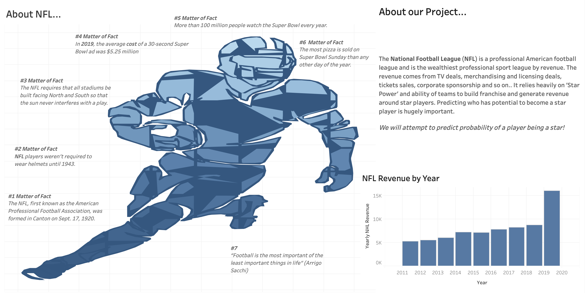

MIDS W210 Capstone Project
Jonathan Hilton, Mattthew McElhaney, Andrew Morris, Edina Tankovic
ACCESS
The following pages will guide you through different applications and demonstrations of our proposed model:
Data Visualization
Exploratory Data Analysis and contextual data, visualized
Estimate Draft Rating
Enter player information to determine desirability
Search by Candidate
Locate an individual already in the data set
Review Complete Ranking
Ordered ranking of all players
ABOUT
Efficiently scouting players is a crucial aspect that affects the viability (and profitability) of teams in the National Football League. By combining unique open data sources, customizing different aspects for different positions and using a player's career-high EA Madden score as our target variable, our team is introducing a novel approach that can help teams efficiently select the best players for their teams.
